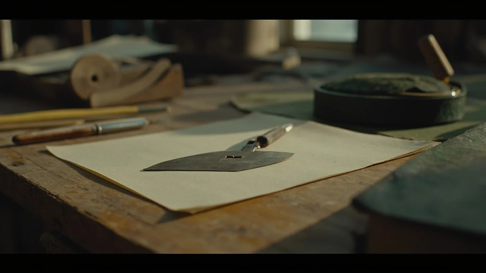
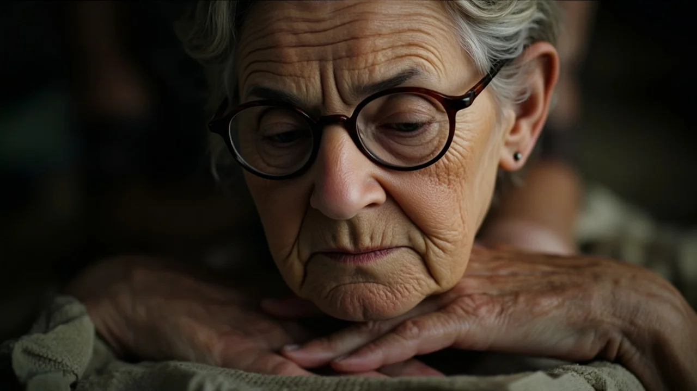
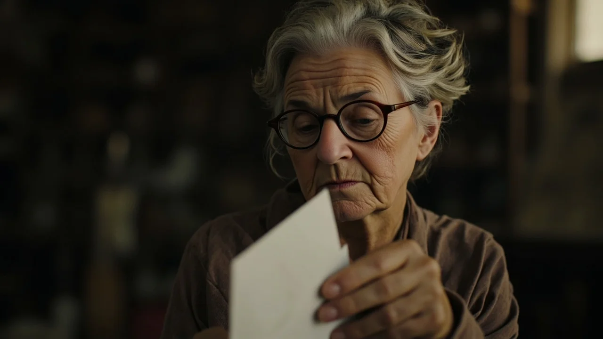
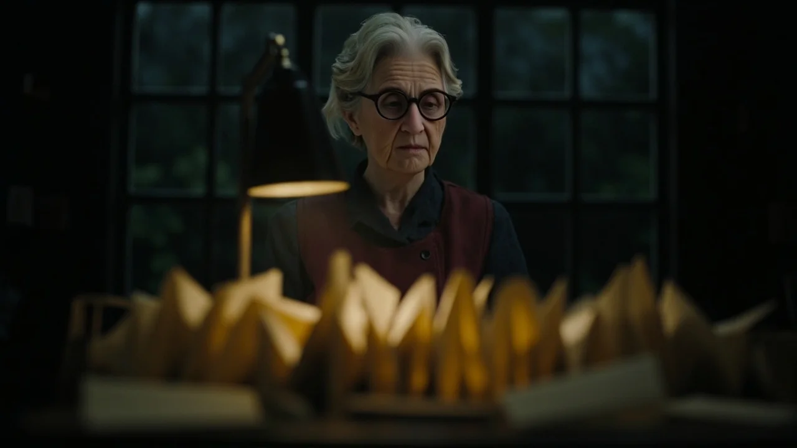
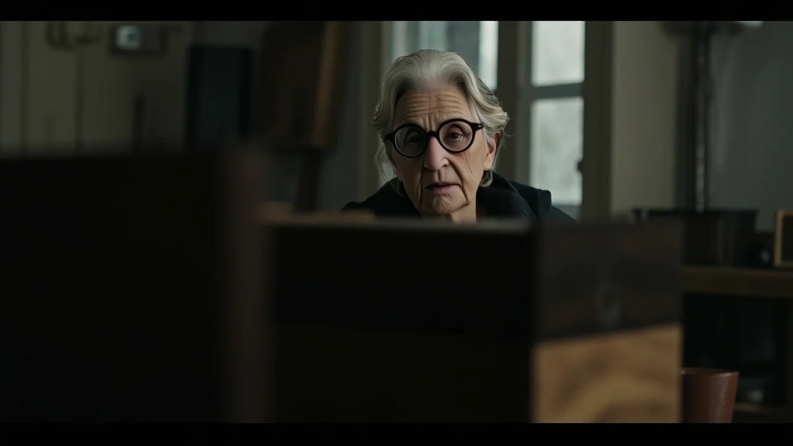

El viento del noroeste traía el olor a salitre y brezo mojado desde la bocana de la ría, empañando el ventanal del taller doméstico donde Clara Vidal pasaba las mañanas de su jubilación. Sobre la mesa de castaño descansaban sus herramientas de siempre: la plegadera de hueso pulido, los pinceles de pelo de marta y las pesas de plomo forradas de badana verde. A sus sesenta y dos años, el hábito de alisar pliegos antiguos con la yema de los dedos seguía siendo el único refugio donde el tiempo parecía suspender su marcha.
La aldaba de hierro de la puerta exterior sonó dos veces con una firmeza tímida.
Clara dejó la plegadera sobre el fieltro, se ajustó los botones de la bata de lino y cruzó el zaguán de piedra enlosada. Al abrir la hoja de roble, se encontró con una mujer que rondaba su misma edad, envuelta en un abrigo negro de paño impecable. Sostenía contra el pecho una caja rectangular de madera de nogal, con las esquinas protegidas por cantoneras de latón oscurecido.
—¿Clara Vidal? —preguntó la visitante con una voz queda, modulada por una educación exquisita que no lograba enmascarar un temblor en las comisuras de los labios.
—Sí, soy yo.
—Me llamo Elena Santamaría. Era la esposa de Daniel Montero.
El nombre cayó en el umbral como una piedra arrojada a un pozo cegado hacía más de tres décadas. Clara dio un paso atrás de forma involuntaria; sus dedos rozaron el marco de madera para buscar apoyo. Hacía treinta y cinco años que no escuchaba ese nombre en voz alta, desde la última tarde de lluvia en la que recogió sus carpetas del taller de la calle de la Platería y subió al expreso nocturno con destino a Florencia.
—Daniel falleció hace tres semanas —añadió Elena, bajando levemente los ojos—. De un fallo cardíaco, mientras dormía. Encontré esto en el fondo de su secreter, detrás de los libros de actas de la fábrica.

Clara observó la caja de nogal. Sobre la tapa, grabadas a fuego en trazos sobrios, figuraban las iniciales D. M.
—Pase, por favor —consiguió decir Clara, apartándose para dejar libre la entrada—. Está empezando a llover con fuerza.
En el salón, frente al mirador que dominaba las bateas grises de la ría, el té humeaba en dos tazas de porcelana blanca sin que ninguna de las dos mujeres se decidiera a probarlo. Elena había colocado la caja sobre la mesa de centro, pero mantenía una mano apoyada sobre la madera, como si le costara desprenderse del peso de lo que contenía.
—Durante muchos años creí que Daniel era simplemente un hombre ausente —dijo Elena, mirando hacia el cristal salpicado por la cellisca—. Era atento, educado y puntual. Cumplía con la familia, asistía a los actos sociales y jamás tuvo un mal gesto. Pero en su mirada había siempre una niebla espesa, una distancia que ninguno de nuestros hijos logró disipar jamás. Vivía en una habitación interior a la que nadie tenía permiso para entrar.
Clara bajó la mirada hacia sus propias manos. Las arrugas del dorso revelaban el paso de los años entre papeles neutros y disolventes de encuadernación.
—Nosotros solo restaurábamos documentos —murmuró Clara, con un hilo de voz que sonó casi a disculpa—. Daniel traía los manuscritos que su abuelo guardaba en el pazo de Cambados. Cartas mercantiles del siglo dieciocho, mapas de navegación... Hablábamos de papel, de tintas de agallas y de viajes.
—No tienes que justificar nada ante mí —la interrumpió Elena con una serenidad dolorosa—. Cuando abrí esa caja tras el entierro y leí las dos primeras cartas, sentí una rabia salvaje. Sentí que toda mi vida había sido un decorado montado para disimular un vacío ajeno. Pero al terminar la quinta carta, la rabia se transformó en una tristeza infinita por los tres. Daniel no fue feliz ni un solo día de su vida adulta, Clara. Y yo tampoco lo fui del todo, porque uno no puede abrigarse junto a un fuego que está apagado.

Elena retiró la mano de la caja y se puso de pie despacio. Se acomodó el pañuelo de seda gris perla sobre el cuello y miró a Clara a los ojos.
—Estas cartas nunca fueron mías. Pertenecen a este taller y a la vida que ustedes dos no tuvieron el valor de defender.
Clara la acompañó hasta la cancela bajo la llovizna. No hubo apretón de manos ni palabras de cortesía vacías; solo una mirada compartida entre dos mujeres que habían habitado, cada una a su manera, las orillas de una misma ausencia.
El silencio de la casa se volvió inmenso cuando el coche de Elena desapareció tras el recodo del camino costero.
Clara regresó al taller, cerró la puerta con pestillo y encendió el flexo articulado sobre el banco de castaño. Se sentó en su banqueta giratoria y descorrió el pasador de latón de la caja. El barniz antiguo desprendió un aroma inconfundible a madera encerada, tabaco de pipa y papel de hilo envejecido.
En el interior, apilados en fajos rigurosos y ordenados por años, reposaban decenas de sobres de color crema. Cada uno llevaba escrito su nombre en tinta azul sepia, con esa caligrafía de trazos inclinados y firmes que ella recordaba tan bien: *Para Clara Vidal*. Ninguno de ellos tenía sello postal.
Con la espátula de hueso, Clara cortó el borde del primer sobre, fechado el veintiocho de octubre de mil novecientos noventa y uno. La misma noche en que ella abandonó la ciudad.

El papel crujió al desdoblarse:
«Clara: He llegado al taller corriendo bajo el temporal, pero la verja ya estaba cerrada con candado y tu nota en el cristal decía que te marchabas a Italia. Te escribo esto desde el café de la plaza, con la ropa empapada y las manos heladas. Esta tarde he ido a casa de mis padres y les he dicho que no me caso con Elena. He roto el compromiso. Les he dicho que la fábrica y las fincas no valen nada si tengo que pasar el resto de mis días mirando a una mujer a la que no amo, mientras la única persona con la que puedo respirar sube a un tren hacia otra frontera. No sé a qué archivo vas en Florencia. He preguntado en la estación, pero nadie sabe darme razón de tu billete. Si estás leyendo esto, si alguna vez vuelves a esta ría, búscame. Renuncio a todo. Solo dime que me equivoqué al pensar que para ti solo fui un cliente que llevaba papeles viejos a tu mesa».
Clara apretó los labios con fuerza mientras una lágrima tibia le resbalaba por la mejilla y caía sobre el margen de la cuartilla, disolviendo una brizna de tinta antigua.
—Dios mío, Daniel... —susurró en la penumbra del taller—. ¿Por qué no lo dijiste antes?
La lluvia arreciaba contra el tejado de pizarra mientras Clara desgranaba las cartas una tras otra, avanzando por el calendario invisible de una vida que discurrió en paralelo a la suya.
Había cartas breves de apenas dos párrafos, escritas en servilletas de hotel durante viajes comerciales a Lisboa o Burdeos; había pliegos enteros redactados en noches de insomnio, fechados en los meses de noviembre, cuando el mar del norte se volvía plomizo y él recordaba las tardes compartidas junto a la estufa de serrín del viejo taller.
Daniel le contaba el nacimiento de sus dos hijos, con una honestidad descarnada que estremecía: «Los quiero con toda mi alma, Clara, pero cada vez que los miro a los ojos me pregunto cómo habrían sido las cosas si hubieran llevado tu risa y tu manera de ordenar el mundo». Le hablaba de los libros que compraba por partida doble, guardando un ejemplar en su biblioteca personal con la esperanza pueril de entregárselo algún día si el azar los cruzaba en una feria de antigüedades en Madrid o Barcelona.

En una carta del año dos mil seis, escrita tras leer en un catálogo de patrimonio que Clara había sido nombrada restauradora principal del archivo de la catedral de Santiago, Daniel escribía con amarga lucidez:
«Ayer estuve a cien metros de ti. Fui a la presentación de las actas capitulares en el claustro. Te vi desde la última fila. Llevabas el pelo recogido y las mismas gafas redondas de concha que te ponías para mirar los pergaminos al trasluz. Estabas hermosa, serena, inalcanzable. Di tres pasos hacia adelante para hablarte, pero vi a tus colegas felicitarte, vi la vida sólida y limpia que has construido sin mí, y comprendí que irrumpir en tu presente con mis cartas amarillentas habría sido un acto de egoísmo imperdonable. Yo elegí la cobardía cuando tuve veintisiete años; no tenía derecho a ensuciar tu paz a los cincuenta».
Clara cerró los ojos, abrumada por el dolor de aquella revelación. Recordaba perfectamente aquella tarde en el claustro de Santiago. Recordaba haberse sentido extrañamente inquieta, recorriendo la nave con la mirada antes de subir al estrado, con la vaga e irracional certidumbre de que alguien familiar respiraba entre las sombras de las arcadas.
Él había estado allí. Había estado allí y ninguno de los dos había roto el cristal invisible que los separaba.
La noche cayó por completo sobre la ría. En el taller solo quedaba encendida la lámpara del banco de trabajo, proyectando un círculo de luz dorada sobre la mesa donde yacían abiertas las sesenta y cuatro cartas de Daniel Montero.
Clara se levantó de la banqueta con pasos lentos. Cruzó el pasillo en sombras hasta su dormitorio y se acercó al buró de caoba con secreter que había heredado de su madre. Introdujo la llave de latón en la cerradura del cajón inferior, levantó el doble fondo de madera donde guardaba su testamento y sus documentos privados, y extrajo un sobre largo de color hueso.
El lacre rojo del cierre estaba intacto, agrietado por tres décadas y media de encierro. En el anverso figuraba su propia caligrafía de juventud, apresurada y temblorosa: *Para Daniel, antes de partir*.

Regresó al taller con el sobre entre los dedos. Con la misma plegadera de hueso con la que había abierto la correspondencia de Daniel, rompió el sello de lacre que había resistido treinta y cinco años en el cajón.
Desplegó el pliego. La tinta negra de su estilográfica conservaba el pulso desesperado de aquella noche de octubre de mil novecientos noventa y uno:
«Daniel: Me voy porque quedarme a ver cómo te casas con otra me partiría en pedazos. Te he querido desde el primer jueves que entraste por esa puerta con las cartas de tu abuela y me miraste las manos llenas de cola de almidón. Si me pides que me quede, si me dices que lo que hubo entre nosotros no fue una ilusión mía mientras secábamos las hojas al sol, dejo la maleta en el suelo y no subo al tren. Pero tienes una boda anunciada, un apellido que sostener y una familia que espera lo mejor de ti. No seré yo quien te obligue a elegir. Si sientes lo mismo, dímelo antes de medianoche».
Clara dejó caer la cuartilla sobre el tapete de fieltro.
La ironía de aquel destino era tan perfecta que casi parecía una burla atroz. Ella había guardado su carta por miedo a que él eligiera su posición social y su compromiso; él había escrito la suya horas después, cancelando la boda, pero guardándola en un secreter por no saber dónde encontrarla y temiendo que para ella solo hubiera sido un cliente pasajero. Ambos habían levantado una fortaleza de orgullo y prudencia para no sufrir el rechazo del otro, y en el empeño habían terminado entregando su vida entera a la ausencia.
Con las manos firmes pero los ojos anegados en llanto, Clara tomó el fajo de cartas de Daniel. Colocó su propia confesión juvenil en la parte superior del montón, uniendo por primera vez en treinta y cinco años los dos lados de aquella conversación rota. Sacó del cajón de la mesa una cinta de seda azul ultramar —la misma que usaba para encuadernar los manuscritos más valiosos— y ató los documentos con un nudo doble y limpio.
Devolvió el paquete a la caja de nogal, cerró el pasador de latón y apoyó la mejilla sobre la tapa fría.
Afuera, la lluvia seguía golpeando los cristales con una cadencia obstinada. Pero en el taller, por primera vez en toda una vida, el silencio había dejado de ser una herida abierta: era una despedida que al fin encontraba sus palabras.